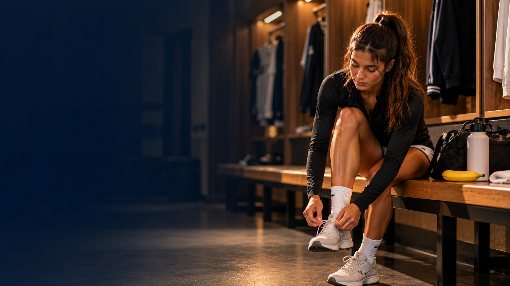
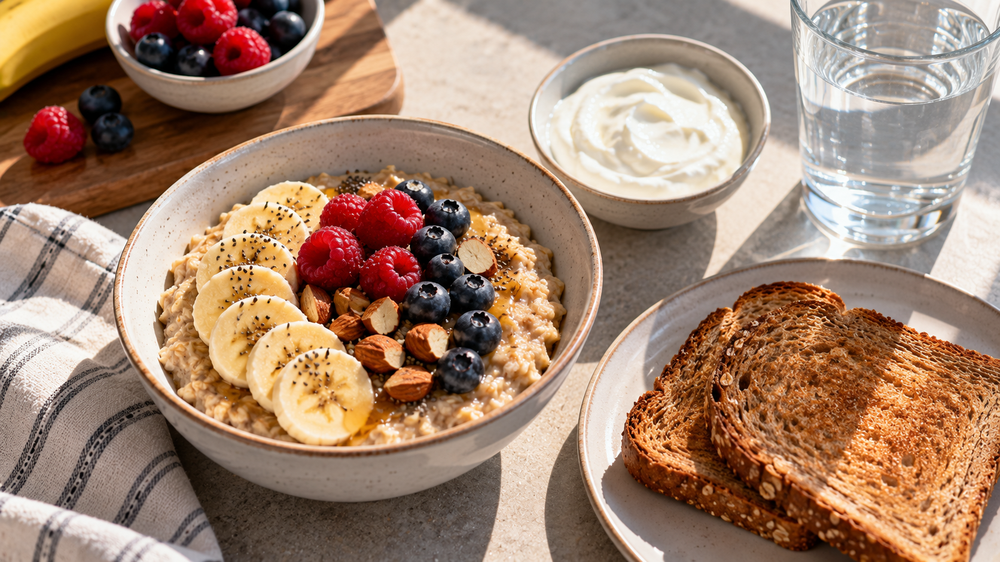
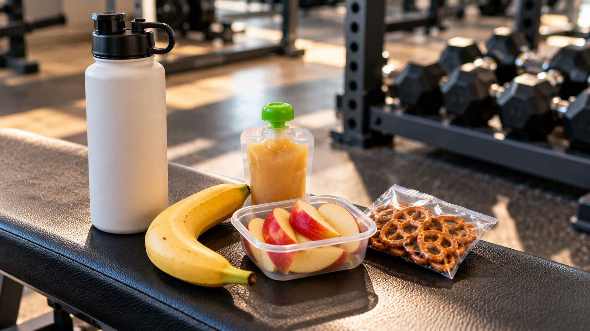
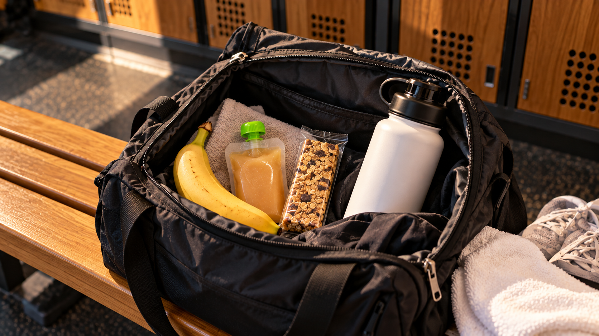

2 to 3 hours before
Eat a balanced meal with carbohydrates, lean protein, and a small amount of healthy fat.
NUTRITION GUIDE
Eat the right foods before practice or competition so you can feel energized and ready to perform.

Pre-game meals should give your body energy without making you feel too full. Focus on carbohydrates, protein, and water.
Eat a balanced meal with carbohydrates, lean protein, and a small amount of healthy fat.
Choose a small snack that is easy to digest, such as a banana, applesauce, or granola bar.
Drink water throughout the day and bring a water bottle with you to practice or your game.
Oatmeal with fruit, Greek yogurt, and water.
Grilled chicken, rice, vegetables, and fruit.
A banana with peanut butter or a granola bar.


Fruit, applesauce, crackers, and pretzels are easy choices when you need energy quickly.

Pack your snack and water bottle before class so you are prepared when it is time to train.